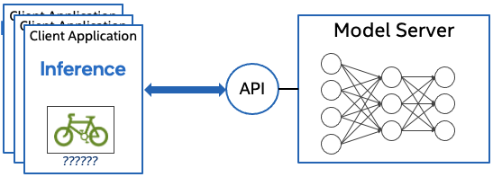

OpenVINO™ Model Server {#ovms_what_is_openvino_model_server}¶
@sphinxdirective
.. toctree:: :maxdepth: 1 :hidden:
ovms_docs_quick_start_guide ovms_docs_architecture ovms_docs_models_repository ovms_docs_starting_server ovms_docs_server_api ovms_docs_clients ovms_docs_dag ovms_docs_binary_input ovms_docs_model_cache ovms_sample_cpu_extension ovms_docs_dynamic_input ovms_docs_stateful_models ovms_docs_custom_loader ovms_docs_performance_tuning ovms_docs_kubernetes ovms_docs_demos ovms_docs_troubleshooting
@endsphinxdirective

OpenVINO™ Model Server (OVMS) is a high-performance system for serving machine learning models. It is based on C++ for high scalability and optimized for Intel solutions, so that you can take advantage of all the power of the Intel® Xeon® processor or Intel’s AI accelerators and expose it over a network interface. OVMS uses the same architecture and API as TensorFlow Serving, while applying OpenVINO for inference execution. Inference service is provided via gRPC or REST API, making it easy to deploy new algorithms and AI experiments.
Model repositories may reside on a locally accessible file system (e.g. NFS), as well as online storage compatible with Google Cloud Storage (GCS), Amazon S3, or Azure Blob Storage.
Read release notes to find out what’s new.
Review the Architecture concept document for more details.
Key features:
support for multiple frameworks, such as Caffe, TensorFlow, MXNet, PaddlePaddle and ONNX
online deployment of new model versions
support for AI accelerators, such as Intel Movidius Myriad VPUs, GPU, and HDDL
works with Bare Metal Hosts as well as Docker containers
model reshaping in runtime
directed Acyclic Graph Scheduler - connecting multiple models to deploy complex processing solutions and reducing data transfer overhead
custom nodes in DAG pipelines - allowing model inference and data transformations to be implemented with a custom node C/C++ dynamic library
serving stateful models - models that operate on sequences of data and maintain their state between inference requests
binary format of the input data - data can be sent in JPEG or PNG formats to reduce traffic and offload the client applications
model caching - cache the models on first load and re-use models from cache on subsequent loads
Note: OVMS has been tested on RedHat, CentOS, and Ubuntu. The latest publicly released docker images are based on Ubuntu and UBI. They are stored in:
Run OpenVINO Model Server¶
A demonstration on how to use OpenVINO Model Server can be found in our quick-start guide. For more information on using Model Server in various scenarios you can check the following guides:
References¶
Contact¶
If you have a question, a feature request, or a bug report, feel free to submit a Github issue.
* Other names and brands may be claimed as the property of others.